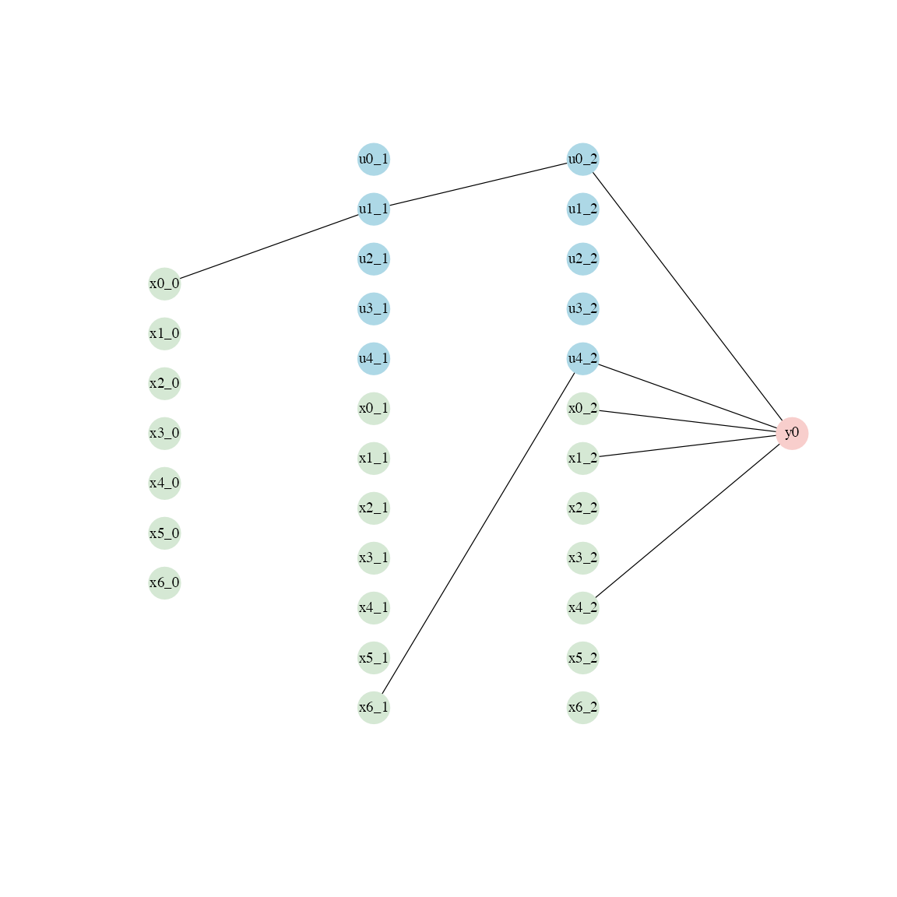
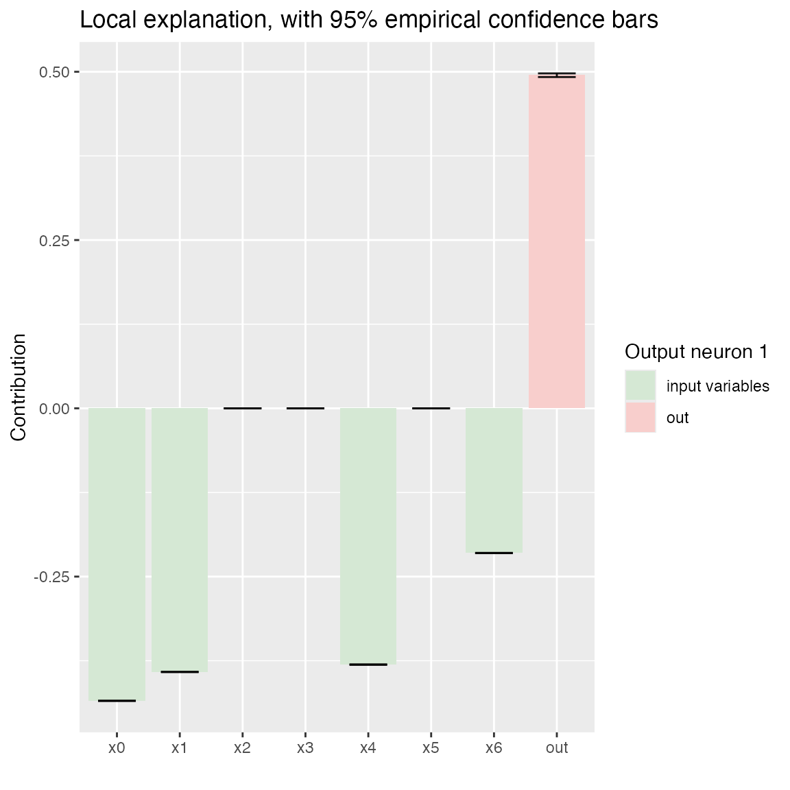

getting_started.RmdLBBNN implements Latent Bayesian Binary Neural Networks in R using the torch package. An LBBNN is a Bayesian Neural Network, where each weight is associated with a Bernoulli inclusion variable, allowing weights to be turned on or off and incorporating model uncertainty in addition to parameter uncertainty.
This vignette walks through basic usage on a simple dataset: data preparation, model definition, training, validation, and visualization.
For this example we use the raisin dataset, consisting of 900 sample of two different types of raisins, with 7 morphological features. The paper that introduces the dataset report around 86% accuracy using a standard MLP.
To start, we use the get_dataloaders function to divide the data into a training set and a test set. The function returns a train_loader and test_loader object. These are PyTorch DataLoader objects, optimized for automatic batch handling and parallel data loading.
In this case we set aside 180 samples to validate performance.
library(LBBNN)
torch::torch_manual_seed(42)
loaders <- get_dataloaders(raisin_dataset, train_proportion = 0.8,
train_batch_size = 720, test_batch_size = 180)
train_loader <- loaders$train_loader
test_loader <- loaders$test_loaderThe model depends on several key hyperparameters. The sizes argument determines the architecture of the network. It is a vector, where the first element is the number of features and the last element the number of outputs. The intermediate value define the number of neurons in the hidden layers. In this case, we have 7 features, 2 hidden layers conisting of 5 neurons each, and 1 output neuron.
The incluion_priors argument determines the prior inclusion probability for each weight matrix. All the weights within each layer is given the same prior. Similarly, stds refers to the prior for the standard deviation of the weights.
The inclusion_inits argument refers to how the probabilities of the inclusion parameters are initialized. This can determine the initial density of the network, and further how density evolves during training. There are several possible keywords that can be given, such as ‘dense’, where all the probabilities are initialized close to 1, or ‘sparse’, where they are close to 0. ‘polarized’ gives probabilities that are either close to 0 or 1. In this example, we use ‘balanced’, which results in probabilities in [0.27, 0.73]. Additionally, the flow and input_skip arguments controls whether to include normalizing flows in the variational distribution, and the input-skip architecture.
problem <- "binary classification"
sizes <- c(7, 5, 5, 1)
inclusion_priors <- c(0.5, 0.5, 0.5)
stds <- c(1, 1, 1)
inclusion_inits <- 'balanced'
device <- "cpu"
model <- lbbnn_net(problem_type = problem, sizes = sizes,
prior = inclusion_priors,
inclusion_inits = inclusion_inits,
input_skip = TRUE, std = stds,
flow = FALSE, device = device)One epoch refers to one pass through the training dataset. Other keywords are the model object, the learning rate for the optimizer, the dataloader, and the device to train on. Optionally, performance metrics such as loss, accuracy and density can be printed to the console during training.
train_lbbnn(epochs = 50, LBBNN = model,
lr = 0.01, train_dl = train_loader,
device = device, verbose = FALSE)After training we can use the validate_lbbnn function to validate the results on the data that was set aside. num_samples refers to how many samples to use for model avearing. It returns the accuracy for the full model, and for the sparse model, selected with using the median probability model, i.e. including weights that have a posterior inclusion probability > 0.5. In addition, it returns the density, and the density within active paths.
validate_lbbnn(LBBNN = model, num_samples = 10,
test_dl = test_loader, device = device)
#> $accuracy_full_model
#> [1] 0.8666667
#>
#> $accuracy_sparse
#> [1] 0.8666667
#>
#> $density
#> [1] 0.1962617
#>
#> $density_active_path
#> [1] 0.07476636If we are interested in looking at which variables affect predictions in general, we can obtain local explanations through the plot function:
plot(model, type = 'global', vertex_size = 10, edge_width = 0.6, label_size = 0.6)
We see that only 4 of the 7 features are used.
If we instead want to get the explanations for specific sample, we can instead use the keyword ‘local’ within the plot function. We must also provide the specific datapoint we want to explain.
x_data <- train_loader$dataset$tensors[[1]]
data <- x_data[42, ]
plot(model, type = "local", data = data,num_samples = 10)
Can also get the same information using coef:
print(coef(model, data,num_samples = 10))
#> lower mean upper
#> x0 -0.4351673 -0.4345348 -0.4341158
#> x1 -0.3919319 -0.3917487 -0.3915151
#> x2 0.0000000 0.0000000 0.0000000
#> x3 0.0000000 0.0000000 0.0000000
#> x4 -0.3809999 -0.3806574 -0.3801446
#> x5 0.0000000 0.0000000 0.0000000
#> x6 -0.2149876 -0.2148254 -0.2145557